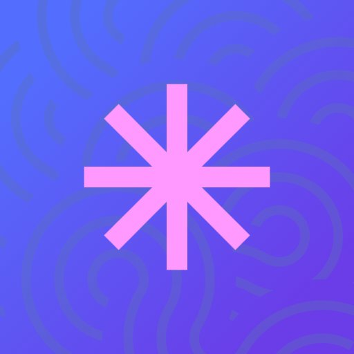

For macOS · Local-first AI
Aster captures your screen, mic, system audio, and meetings, then transcribes and summarizes them right on your Mac with Apple Intelligence — private, free, nothing uploaded. When a job needs more horsepower, hand off seamlessly to Claude or OpenAI, then share the result as an end-to-end encrypted link. No subscription, and nothing leaves your Mac until you choose.
macOS 13+ · Apple Silicon · Notarized · Free
What becomes possible
Other recorders wall the good parts behind a plan or push your screen through their cloud, then hand back one fixed summary. Aster gives Claude the recording as text it can read, so you ask for whatever you actually need.
What needs doing, with the who and the when, pulled from what was said and done.
A clean, timestamped record of the meeting, demo, or walkthrough you just did.
Repro steps, the exact clicks, the URL, and the error text as text. Paste straight into Claude Code.
Linear- or Jira-ready with the context attached. With your tools and MCPs connected, Claude can file it, open the PR, or publish the link.
Because the recording is already text, Claude works from it fast and cheap, with no video to crunch. And when you share the result, the link is a page Claude composed for that recording, not a fixed video player.
What it does
Aster turns a recording into structured context on your Mac, summarizes it on-device with Apple Intelligence, and hands off to Claude or OpenAI only when a job calls for it.
Recording, transcription, OCR, and correlation all run locally. Nothing leaves your Mac unless you choose to share it.
Summarize a recording on-device with Apple Intelligence — private, free, and instant. The everyday path needs no cloud and no key at all.
When a job needs a frontier model, hand off to Claude or OpenAI without leaving Aster. You pick when the cloud gets involved — local stays the default.
Capture the screen as video with your microphone and the computer's own audio together — both sides of a call, the app you're demoing, every word said.
Connect Apple Calendar and Aster auto-records your meetings, then hands you a pre-meeting brief built from past calls with the same people.
Copies a ready-to-paste package (transcript, clicks, on-screen text, and screenshots) and opens Claude desktop, the browser, or just copies for Claude Code.
Your narration is transcribed locally. Choose Apple Speech for zero setup, or an on-device Whisper model for sharper accuracy.
Play a recording in a pop-out window with a synced narrative sidebar that lays out the transcript, clicks, and screenshots on the timeline. Click any moment to jump there.
Aster grabs screenshots as you work and reads on-screen text with Apple Vision. Flag a key moment by voice or hotkey and it's attached for Claude.
Aster includes an MCP server. Connect it to Claude Desktop in one click, and Claude can browse your recordings, read the narrative and transcript, and look at screenshots on its own.
Use hosted credits or your own Anthropic or OpenAI key, and Aster runs the analysis for you, then saves a formatted HTML report on the recording. No copy and paste.
The app is free, notarized by Apple, and auto-updating. Cloud AI is one-time pricing with credits that never expire — no monthly bill, nothing to cancel.